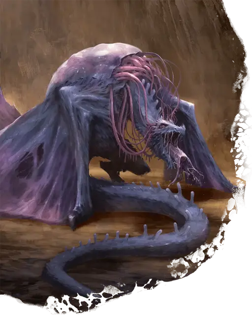

Дракон старшего мозга
Elder Brain Dragon
Громадная Аберрация, законно-злая

Класс Доспеха 17 (природный доспех)
Хиты 350 (20к20 + 140)
Скорость 40 футов, летая 80 футов (парит)
| мод | спас | ||
|---|---|---|---|
| СИЛ | 27 | +8 | +8 |
| ЛОВ | 13 | +1 | +1 |
| ТЕЛ | 25 | +7 | +14 |
| мод | спас | ||
|---|---|---|---|
| ИНТ | 21 | +5 | +12 |
| МДР | 19 | +4 | +11 |
| ХАР | 24 | +7 | +14 |
Навыки Восприятие +18, Магия +12, Проницательность +18
Иммунитет к урону психическая энергия
Иммунитет к состояниям испуг, очарование
Чувства слепое зрение 120 футов, пассивное Восприятие 28
Языки Глубинная речь, Драконий, Телепатия 5 миль
Опасность 22 (41000 опыта)
Бонус мастерства +7
Особенности
Легендарное сопротивление (4/день). Если дракон проваливает спасбросок, он может вместо этого сделать спасбросок успешным.
Осадный монстр. Дракон наносит двойной урон объектам и сооружениям.
Необычная природа. Дракону не нужен воздух или сон.
Действия
Мультиатака. Дракон совершает одну атаку Укусом, две атаки Когтем и одну атаку Щупальцем.
Укус. . Рукопашная атака оружием: +15 к попаданию, досягаемость 15 фт., одна цель. Попадание: 19 (2к10+8) колющего урона плюс 11 (2к10) урона психической энергией.
Коготь. . Рукопашная атака оружием: +15 к попаданию, досягаемость 10 фт., одна цель. Попадание: 11 (1к6+8) рубящего урона.
Щупальце. . Рукопашная атака оружием: +15 к попаданию, досягаемость 15 фт., одна цель. Попадание: 6 (1к8+2) урона психической энергией. Если цель Огромного размера или меньше, она схвачена (Сл высвобождение 18). Дракон может одновременно держать в захвате до четырёх целей.
Дыхание смесью головастиков (перезарядка 5-6). Дракон выдыхает смесь в 120-футовой линии шириной 15 фт. Все существа в этой области должны совершить спасбросок Телосложения Сл 22, получая 55 (10к10) урона психической энергией при провале или половину этого урона при успехе. В случае успеха или провала, если существо не является Конструктом или Нежитью, оно заражается головастиками-иллитидами.
Будучи зараженным, существо получает 16 (3к10) урона психической энергией в начале каждого своего хода. Существо может повторять спасбросок в конце каждого своего хода, оканчивая действие на себе после того, как оно преуспеет в трёх спасбросках. Если на существо нацелено заклинание, которое снимает проклятие или восстанавливает 40 или более хитов, головастики, заражающие существо, мгновенно уничтожаются, оканчивая действие на существо.
Если хиты гуманоида уменьшены до 0 во время заражения, существо стабилизируется, но остается без сознания в течение 6к12 часов. Когда период бессознательного состояния заканчивается, существо превращается в свежевателя разума [mind flayer] с его полными хитами . Наложение заклинания исполнение желаний [wish] на бессознательное существо избавляет его от заражения и предотвращает превращение в свежевателя разума.
Легендарные действия
Дракон старшего мозга может совершить 3 легендарных действия, выбрав один из вариантов ниже. Дракон старшего мозга может использовать только одно легендарное действие, и только в конце хода другого существа. Дракон старшего мозга восстанавливает использованные легендарные действия в начале своего хода.
Щупальце. Дракон совершает одну атаку Щупальцем.
Разрушение концентрации (стоит 2 действия). Дракон нацеливается на существо, с которым сражается. Концентрация цели на заклинании, которое она наложила, или способности, которую она поддерживает, заканчивается, и цель получает 19 (3к12) урона психической энергией.
Описание
Одно из немногих утешений, доступных тем, кто вынужден бороться с колонией свежевателей разума - это предел ее досягаемости, который распространяется только на влияние старшего мозга колонии. Но это маленькое утешение исчезает, когда колонии удается поймать дракона. Команды свежевателей разума связывают дракона, который подвергается ужасной трансформации, когда старший мозг цепляется за спину дракона и вонзает свои щупальца в мозг дракона. Дракон старшего мозга - это кошмарный результат.
Используя подвижность тела дракона, старший мозг теперь может служить могущественным генералом армий иллитидов, свободным от ограничений своего бассейна. Старший мозговой дракон становится психической угрозой в дополнение к физической, его тело изобилует аберрантным влиянием и пульсирует псионической силой. Даже оружие дыхания старшего мозгового дракона мутирует во время своей трансформации, превращаясь в поток соленой жидкости, бурлящий головастиками иллитидов. Эти головастики могут быстро убивать жертв и превращать их в свежевателей разума, позволяя дракону старшего мозга вырастить свою собственную кочующую колонию.